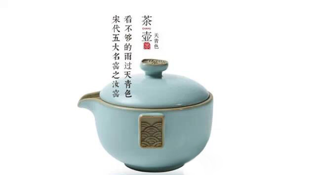
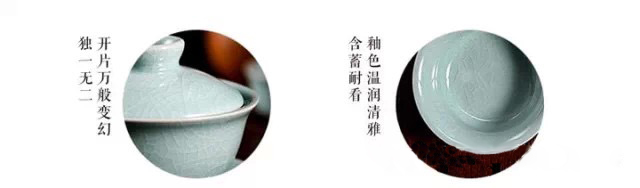
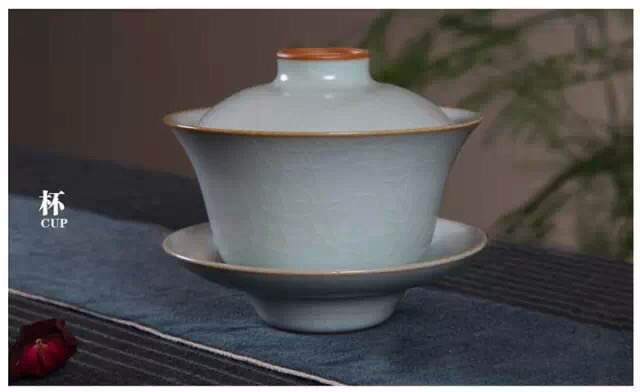
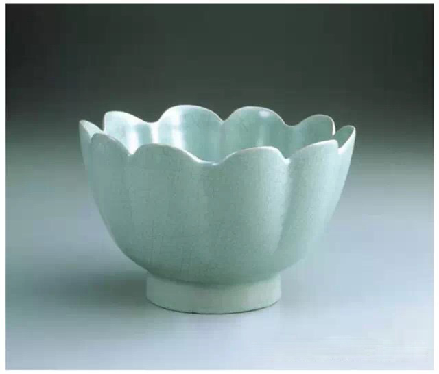

交易中心
交易中心
 交易指南
交易指南
 普洱档案
普洱档案
 普洱资讯
普洱资讯
 下载中心
下载中心
 活动频道
活动频道

看不够的雨过天青色：宋代五大名窑之汝窑
2016-02-25 17:40 来源：蒙顶山普洱

对于杯子控的茶友来讲，汝窑一定不陌生。古朴大方的造型、细腻温润的手感、让人爱不释手的开片纹理。但是，你手中所拥有的汝窑茶具，可能只是仿汝窑哦！
汝窑，创烧于北宋晚期，因其窑址在汝州境内（今河南汝州、宝丰一带），故名。有着“宋瓷之冠”美誉的汝窑，其开窑时间前后不过只有二十年，短暂的烧造时间，传亦不多。流传至今的真品，已知的仅67件。所以你在市场上常见的不过是当代人模仿汝窑制成的汝瓷茶具而已。但是随着技术的不断加深，仿汝与真品也慢慢相差无几了。
汝窑：雨过天青色看不够
宋时民间素有“纵有万贯家财不如汝瓷一片”，足以见其珍贵。看现代收藏专家马未都快速为你讲解汝宋代汝窑四大特征：
1、鱼鳞状开片：汝窑釉面的开片跟所有瓷器的开片都不一样，裂纹的角度是斜着的，不是直着的；
2、釉呈天青色：与当时其他窑口相比，它的颜色是天青色；

3、香灰胎：胎是浅浅的灰色，像烧了香以后落下来的香灰。胎非常薄，一般情况下，胎和底同厚，一般的瓷器，都是底厚，壁薄；
4、素器：一般的情况下，汝窑都是素器，不带纹饰。因为釉厚，胎上面不好刻划。

汝瓷开片堪称一绝，其形成最初时是器物于高温焙烧下产生的一种釉表缺陷，行话叫“崩釉”。巧夺天空的绝活在于，匠师将这种难以控制的、千变万化的釉病，通过人为地操作转换为一种自然美妙的装饰。
开片汝窑需经过两次烧制才能成功，第一次烧素坯，第二次上釉后开始烧制直至成为成品。在胎土和釉料出窑时都会收缩，胎土冷却时间远比釉料冷却时间快，从而会形成收缩之间差距，进而形成开片。

汝窑、哥窑开片，片片不相同
讲到瓷器开片，很多茶友可能会说哥窑中也有“开片”特征，两者如何区分？
汝窑：
其瓷器开片的纹理毛毛扎扎犹如“蟹爪纹”（釉面开片的纹理毛毛扎扎的，就像看大闸蟹的蟹爪尖上都是小毛刺），釉面有很细的开片。未养之前，开片没有哥窑的纹理明显。

哥窑：
哥窑的纹片多种多样，由于开片大小不同、深浅层次不同，胎体露出的部位因氧化或受污染程度也不尽相同，致使开片纹路呈色不一。如“金丝铁线”哥窑这一典型特征，瓷器釉面大开片纹路呈铁黑色，称“铁线”，小开片纹路呈金黄色，称“金丝”。

汝窑那一抹开片最迷人。釉面下蝉翼般细小的开片，深浅相互交织叠错，像是银光闪闪的片片鱼鳞。但很多茶友买回汝瓷茶杯后却不知如何养好开片。小编来支招，来看看怎么养汝窑吧！
1、把玩时将汝瓷内外洗净，避免有油污接触汝瓷；
2、使用时可用养壶笔沾茶汁滋润汝瓷表面，长期使用纹理明显，更具有古韵；
3、使用后应将茶渣清除干净，可避免开片纹路不均匀现象，即用清水冲洗晾干；
4、在未使用时，可静置于干燥、清洁的地方，避免沾满灰尘。
番外篇
1、买回去的汝窑新茶具，千万不要放在开水里面煮，这样一下就破坏了胎跟釉，而且会开出很不均匀的裂纹；
2、使用前，一定要温杯，使茶具受热均匀；
3、有些人为了更快见到开片效果，把整个器具放在茶水中浸泡，注意时间不能太长；
4、有些深颜色茶汤养出来的杯子略显脏，小编建议不妨用颜色淡一点的茶养杯子，例如生普、铁观音等。
汝窑精品赏析
在少数传世汝窑精品中有出现过文字，虽不是装饰，但仍提高了对器物的鉴赏意趣。如：“奉华”二字多见于尊、瓶、碟之上。“蔡丙”、“宁”则是见于小碟与洗上。其中“奉华”应是宋奉华宫的专用物。
现结合台北故宫博物院收藏的汝窑经典器型，我们一起来欣赏下吧！

- 云南茶山的普洱茶产量有多少？2016-03-08
- 普洱茶守护心脑血管健康，并降血糖!2016-03-04
- 柴为春茶头桩事，臻味号做茶选“柴”有讲究2016-03-02
- 世界各国奇特的饮茶方式2016-03-02
- 古树茶的6个小秘密2016-02-29